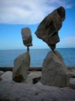
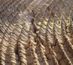
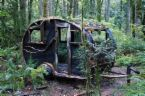
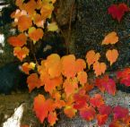
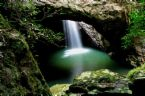
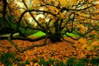
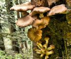

the coherence way
a posteriori
I love all that is natural. The human race must finally find nature to be a profound and irreplaceable work of art and cherish it as such.
And then there is nothing more sublime than a space hewn from natural materials… and then maybe a single vase of onion flowers and peach leaves. God is not less present, the “oneness” no less stunning.

natural mannerism
I love drama!
The High Renaissance ushered in a new architectural form known as “Mannerism”, in which Michelangelo and Giulio Romano designed buildings “full of tension and virtuosity, where the clarity of the High Renaissance ideal was subverted by a rebelliously theatrical sophistication”. This evolution of the classical tradition resulted in some of the most famous and prized buildings of the period and moved the classical tradition to a new level of understanding, grace and beauty.
The mannerist example above describes the spirit of my design conviction, which I call “Natural Mannerism”. I similarly seek a reverent but dynamic deviation from our classical heritage appropriate to the unique California climate and lifestyle. I am profoundly inspired by the ancient, natural and indigenous design vocabularies of Greek, Etruscan, Roman, Egyptian, Incan, Mayan, Aztec, Chinese and Japanese architecture. In combining these ancient traditions with contemporary idioms and far greater engineering knowledge and materials, the results are spaces full of surprise, drama, excitement and freedom.

natural-ness
I love all that is natural!
The beginning of the twenty first century is a time when expanding human population and limited natural resources are threatening our beautiful planet Earth and the viability of long familiar ways of life. I believe that the human race must finally find nature to be a profound and irreplaceable work of art and cherish it as such.
My aesthetics are based on a unique integration of contemporary architecture and old world forms united in the use of natural materials crafted to bring out their intrinsic beauty and sophistication while at the same time, expressing their natural and rugged qualities.
Architecturally, the natural environments I design are contemporary, open, and dynamic in scale and proportion, yet still intimate and close to the land. The spaces are built of native stone, wood, glass, raw stucco and concrete seemingly growing from the ground as if they had always been on the site. Views are framed with expanses of glass and movable walls that disappear to make the distinction between interior and exterior spaces irrelevant. This contemporary idiom is combined with traditional vernacular of arches, columns, balconies, loggias, courtyards and colonnades. The rich, warm glow of century old bridge and barn timbers are re-crafted to express the structure and expose their natural beauty and timeworn patina.
The dynamic architecture of the natural environment is punctuated with interior furnishings of natural materials: metals forged into shape with fire and force, which are then combined with wood, stone, marble, glass, bamboo and natural reeds to create a bold, sophisticated, contemporary, natural and classic aesthetic. This is evident in all aspects of the furnishings for the natural environment. Hardware, light fixtures, furniture, and garden ornamentation are crafted in bold scale while retaining a light, sunny, floating quality. Natural textiles of cotton, silk, wool, reed, root and bark will upholster and drape furniture, interior and exterior spaces. Appropriate period antiques will be in sublime juxtaposition with the new and bold style of the natural environment”.
domestic grandeur
I love grand expressions!
My interior volumes are interior landscapes with grand volumes and scale while still remaining intimate and human scale. The interior space is conceived of as a great volume from basement to roof, that grows from the earth, moldable to any form imaginable. Rather than a series of boxes stacked up vertically on top of the land to support the roof and horizontally to define formal spaces, rooms share volume with each other and/or with circulation space to create a grand volume in a smaller area. The structure is clearly expressed. Balconies, overlooks, split-levels, and other architectural features define space horizontally, vertically and diagonally.
period architecture
I love what we have evolved from!
For the past fourty years, I have been designing Regional American, Mediterranean, English, French, and Japanese period homes with projects ranging from one thousand to fifty thousand square feet. Common to all of my projects is the careful integration of old world design idioms expressed with natural and authentic artifact materials procured through worldwide resources enabling the expression of a one-of-a-kind individuality. Technical understanding of the nature of materials and craftsmanship, and attention to the multitude of details involved in the execution of a period architecture, are hallmarks of my Natural Mannerism.

interior design
I love luxury and fabulousness! I love stark monastic simplicity!
There is such a range between these extremes, and each is an opportunity to create remarkable environments ideally suited to my client’s lifestyles. What I love about interior design is the opportunity to play, to create art, to breathe the life force into living space as it breaths back and nourishes us. While I am deeply focused on the “objective” process of the land planing, landscape and architecture as it is the foundation of all success of the endeavor, it is when we get to the “subjective”, intimate details of materials, color, texture, lighting, art, furnishings and accessories that there is the opportunity for alchemy and magic, for completion, wholeness, for “oneness”…
I have spent many years flying and driving to the four corners of the world buying and shipping artifact materials, art and antiques to integrate into my client’s homes and healing environments. Along the way I have learned first hand how through thousands of years of human history, man has always searched for ways to express their truth , beauty and “oneness” and translating it into the architectural, decorative and functional arts of their time.
I once abhorred the Baroque period with its melodramatic, over-the-top religiosity and opulence. But in working intensively with the Baroque and its dramatically varied expressions, I learned to love the drama, the richness, the holiness of its religious inspiration. Indeed I learned to feel the glory of God, of the experience of “oneness” that inspired the craftsmen and artisans during these periods of magnificence. My clients and I discovered a deep soul connection to a part of our own origins and to our selves. To this day the work of these artisans and craftsmen, now gone for hundreds, or thousands of years is given a new life in a new environment in which they now stand.
And then there is nothing more sublime than a space hewn from natural materials. From rustic beams, rugged stone, ancient weathered plaster walls,….oh! and how about some uninterrupted glass wall….oh! and with a stream running through it……. and then maybe a single vase of onion flowers and peach leaves. God is not less present, the “oneness” no less stunning.
Many of my past clients, many of whom I have designed two and three homes with, will agree that perhaps the most important things I have helped them create are: a totally individual sense of style and magic expressed from materials and craftsmanship that are simply unique. And, a sense that the furnishings, art and objects they have surrounded themselves with have been assembled throughout a lifetime of travel and adventure, or handed down as family heirlooms through years of family tradition. There is just no sense of ANYTHING being store-bought.

landscape design
“You cannot overcome the land”
Working with my clients to fully develop their specific desires and requirements, their “program” I then work from the land inward towards the living space…….I design “backwards”.
It all starts with the land. Conceiving of the land and gardens in answer to the essence of the place and its energy, I then create the interior and transitional spaces in intimate communion with the nature they inhabit and look upon. Once these relationships are understood I draw the architecture up, out of the land, giving form to the living spaces and subsequently the form of the structures. All is in answer to the land, the sun, wind, views and the flow of energy.
With my “backwards” approach in the early stages of design, I take the land planning and landscape design lead to ensure integration of the totality of the endeavor. I then illustrate my recommendations for site development of view corridors and garden elements critical to the overall experience from within and without the living spaces. I also recommend basic color and planting schemes and make suggestions for trees and plant materials and landscape lighting, water features and garden art.
Thereafter, I work in collaboration with your Landscape Architect. I have worked with a number of top landscape architects in California over the years can recommend a team based on the type, and style of project.

permaculture
I love living in harmony with nature!
The term “Permaculture” initially meant "permanent agriculture" but was expanded to also stand for "permanent culture" as it was seen that social aspects were an integral part of a truly sustainable system. For many Permaculture has come to define an approach to living in harmony with the Earth without depleting nature or our own place in it.
Permaculture has been a major inspiration at our Napa vineyard home and our Colorado ranch for our own gardens and sustainable self-sufficient ideals. I am a Certified Permaculture Designers working with some great consultants, I understand and work with the principals and practices of Permaculture in the planning for domestic food production, vineyard, and agricultural planning, and in the context of self sustaining home, retreat and intentional community design.

health
Conceiving of space in the context of the whole person requires the integration of body, mind, and spirit. This integration can be dramatically supported by our environment, or our environment can have a direct negative on our health and well being.
In addition to my architectural and interior design work, I am also a Certified Massage Therapist and subtle energy healer at Lake Tahoe where I practiced for s ix years. In my healing practice, I work hands-on with the well-being and integration of my client’ s bodies, minds and spirits. In this work I assist my clients to release energy blocks, restore structural alignment, and the releasing of soft tissue issues, and most recently entity removal. More importantly, I help my clients develop their own abilities to heal themselves.
Interestingly, through my healing work, I experience directly the effects of environmental pollution, toxicity, stress, and disrupted energy fields, much of it environmental. This hands-on learning has ultimately been an invaluable asset in my design practice as I have developed greater experience and sensitivity of energy and its effects.
I understand that the health and well-being of my clients, their families, friends, retreants and communities are paramount to the integrity of their built environment. I am knowledgeable in the use of environmentally-sound and health-sustaining materials and construction systems. Additionally, I have a number of specialized consultants who provide ongoing technical support in the ever-evolving and important areas of indoor air quality, water quality, Baubiology, Feng Shui, Dowsing, Natural Patterns, Permaculture, and Electromagnetic field pollution.
community
It is my belief that the next meaningful stage in our human evolution is a return to “community”. I am particularly interested in helping communities come to into being and/or becoming more self-sustaining, coherent, inclusive and whole.
Five years ago I was privileged to enter into a design process to develop a conceptual master plan for a retreat center in Northern California, the construction of which was completed in fall of 2009. It had previously been a luxury spa and hotel whose owner wanted to transform it into a spiritual retreat center, “a sanctuary where the body can rest and the soul reveal itself”. It was a remarkable experience of co-creation with the founder, staff, residents, retreat leaders, consultants, engineers, contractors and sub contractors involved in the project. It was also my first experience at creating a “community” for the benefit of all who entered the sacred space.
Since that experience, the world has been evolving more and more towards intentional and cooperative living communities of like-minded people who seek to create the qualities of shared living we have lost in the two hundred years of the industrial age.
In co-creating with community-builders, “architecture” is far more than the land planning, design and building of physical structure. It is about assisting members of their communities to fully explore and deeply understand the conditions and opportunities of their desired aspirations. This work often means assisting in many aspects of self sufficiency, economics and social structures. This includes developing consensus, a shared vision, the distribution of responsibilities and resources, evolution of identity, development of a clear mission and the understanding and maintenance of their public image. My work here helps communities give structure and form to their ideas, systems, controls, and the coherence of their mission.
The terms "a priori" and "a posteriori" are used in philosophy to distinguish two different types of knowledge, justification, or argument: 'a priori knowledge' is known independently of experience (conceptual knowledge), and "a posteriori knowledge" is proven through experience. Some things are just play subjective .................and are great.......Below are some design principals that inspire me. Purely a posteriori,
what follows, are various ways of communicating what informs my approach to designing my client’s dreams………
a posteriori
